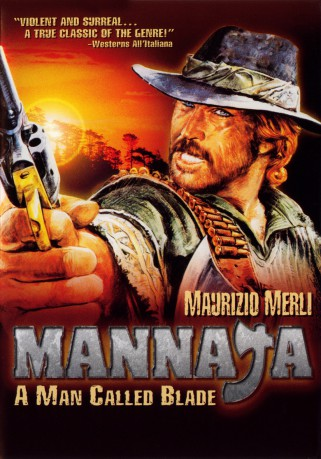
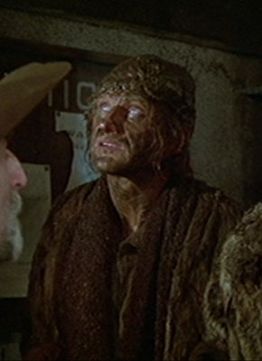
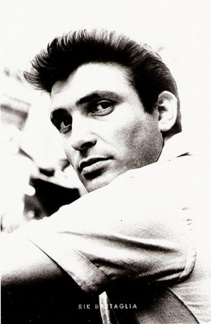
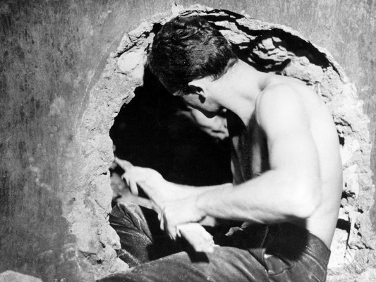
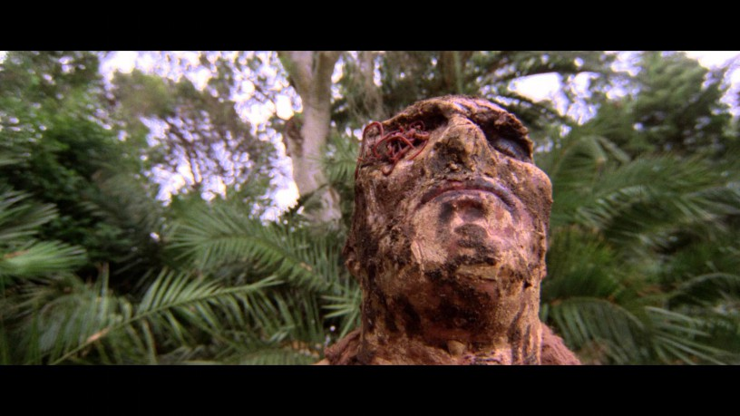

#1401 Mannaja - Das Beil des Todes
Alternativ: A Man Called Blade (Englischer Titel)
 
 IMDB-Wertung: 6.7 / 10
IMDB-Wertung: 6.7 / 10  Metascore: 0
Metascore: 0 
Kopfgeldjäger Mannaja zieht durch die Prärie – im Schlepptau einen Outlaw, den er gefangen genommen und ihm die Hand abgehackt hat. Um sich Geld zu verdienen macht er seinen Gefangenen beim Pokerspiel zu Geld und heuert kurz darauf beim Silberminen- Besitzer McGowan an, um dessen Silbertransporte zu bewachen. Leider kann er nicht verhindern, dass die Banditen die Goldmine und das Haus von McGowan übernehmen und er gerät selbst in Gefangenschaft. Eingebuddelt bis zum Kinn im brennenden Wüstensand unter sengender Sonne überlässt man ihn seinem Schicksal.
Jahr: 1977
Dauer: 101 Minuten
FSK: BPjM Restricted
Land: Italien Studio: Avis-FilmverleihTonspuren:
Untertitel:
Auflösung: 1080p (1920x880) Größe: 6686 MB
Genre: Action, Thriller, Drama, Western
Regisseur: Sergio Martino
Drehbuch: Sergio Martino, Sauro Scavolini, Sergio Martino
Soundtrack: Guido De Angelis, Maurizio De Angelis
Darsteller:
 Michael Forest als Blade , uncredited
Michael Forest als Blade , uncredited- Maurizio Merli als Mannaja
- John Steiner als Valler
- Sonja Jeannine als Deborah McGowan
-  Donald O'Brien als Burt Craven
- Salvatore Puntillo als Johnny Johnny - the impresario
- Antonio Casale als Dorman - bandits' head
 Enzo Fiermonte als The government Envoy
Enzo Fiermonte als The government Envoy-  Rik Battaglia als Gerald Merton - Mannaja's father
- Aldo Rendine als The Fat Passenger in the Stagecoach
- Sergio Tardioli als The Saloon Barman
- Sofia Lombardo als Mannaja's Mother
-  Philippe Leroy als McGowan
- Martine Brochard als Angela
- Nick Alexander als Dorman - Bandits' Head , uncredited
- Domenico Cianfriglia als Valler's Man , uncredited
- Alberto Dell'Acqua als Valler's Man , uncredited
-  Ottaviano Dell'Acqua als Rioting Miner , uncredited
- Bruno Di Luia als Stagecoach Guard , uncredited
 Nello Pazzafini als Valler's Man , uncredited
Nello Pazzafini als Valler's Man , uncredited- Riccardo Petrazzi als Valler's Man , uncredited
- Claudio Ruffini als Valler's Man with Whip , uncredited
- Franco Ukmar als Valler's Man , uncredited
- Frank von Kuegelgen als Valler's Man , uncredited
- José Yepes als Valler's Man , uncredited
Datei: X:\HD-Western-1960-1979\Mannaja - Das Beil des Todes (1977, FSKBPjM Restricted, 1920x880).mkv seit 30.06.2015
Festplatte: HD Eastern+Western
 Es gibt insgesamt 110 Filme in der Gruppe 'HD-Western-1960-1979'
Es gibt insgesamt 110 Filme in der Gruppe 'HD-Western-1960-1979'